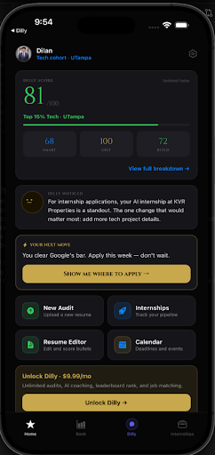
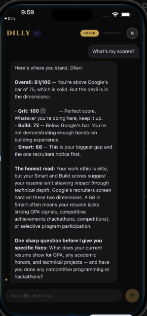
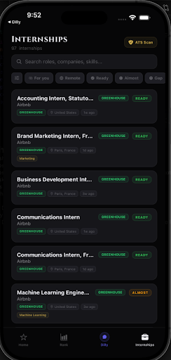
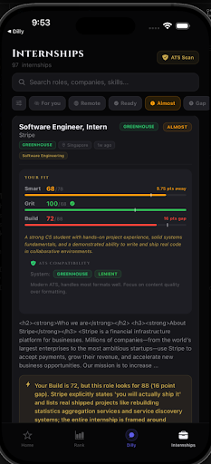

Resume Audit & Dilly Score
Upload a resume. Get scored 0-100 across four dimensions, weighted by career track across 22 fields with cohort comparison. Evidence cited from the student's actual content. Students see 3x increase in callbacks after targeted edits.
SmartGritBuildJob Readiness

Dilly AI: Career Coach
Thread-based AI that knows the student's resume, scores, applications, and deadlines. Ask "Am I ready for Stripe?" and get a real gap analysis. Coach mode, mock interviews, and custom job analysis for any listing. 60x cheaper than a professional career coach.
Full context awareness24/7 availabilityMock interviewsCustom job analysis

Internship Matching & Gap Analysis
97+ real internships from Stripe, Airbnb, Cloudflare, and more. Each listing shows readiness with dimension bars and a personalized insight on how to close gaps. Students apply only when ready, eliminating the junk applications flooding recruiter inboxes.
ReadyAlmostGap

ATS Scanner: 6 Systems
Scans against Greenhouse, Workday, iCIMS, Taleo, Lever, and SuccessFactors. Per-system scores, parse previews, formatting issues, and specific fixes. 75% of resumes are rejected by ATS before a human sees them. Dilly fixes that.
6 ATS vendorsParse preview150+ company lookupPer-system scoring
Resume Editor with Live Scoring
Every bullet point gets a score. Students see "Good" vs "Needs work" in real time. AI suggests specific rewrites with quantified impact. Overall score updates as they edit.
Per-bullet scoringAI rewrites
Leaderboard, Tracker, Calendar
.edu-verified peer rankings by track and dimension. Full application pipeline (Saved → Applied → Interviewing → Offer). Calendar with deadlines. Score history over time. The habit loop that drives daily engagement.
LeaderboardApplication CRMCalendarScore history